同源每一屏都是主界面交互稿 v4 的真实渲染（marble_main_v4.html?step=N），不是另画的示意；点任一屏打开可操作稿并跳到该状态，可从该状态继续发射。
标注只讲功能与判定，奖励内容与数值以数值页为准。共 19 步 · 6 段：进入与准备 / 发射 / 计分核心循环 / 闯关 / 充能 Buff 与付费转化 / 排行与边界态。
（1）进入与准备
① 主界面 · 首次进入（第 1 场 · 0 分）
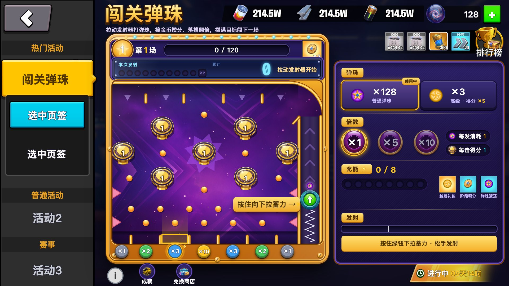
▶ 可操作 · 点开跳到此状态
顶部进度条：左「第 1 场」徽章、中 0 / 120、右本场奖励格。显示屏待发「拉动发射器开始」。盘内右侧是发射槽：弹珠坐在绿钮上，箭头提示下拉蓄力。底部七格倍数槽，金框 ⚡ 为触发槽（随机指定）。
② 选倍数 ×10 · 切高级弹珠
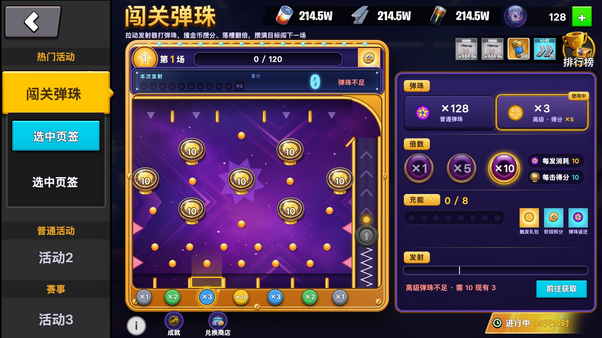
▶ 可操作 · 点开跳到此状态
右控制台：点倍数钮 ×1 / ×5 / ×10，得分与每发消耗同倍放大，胶囊实时显示「每发消耗 10 · 每击 +10」。点高级弹珠 chip 切换，待发弹珠变金，本发最终得分 ×5。发射中两者锁定。后续步骤按 ×1 普通弹珠演示。
（2）发射
③ 按住绿钮下拉 · 蓄力 70%
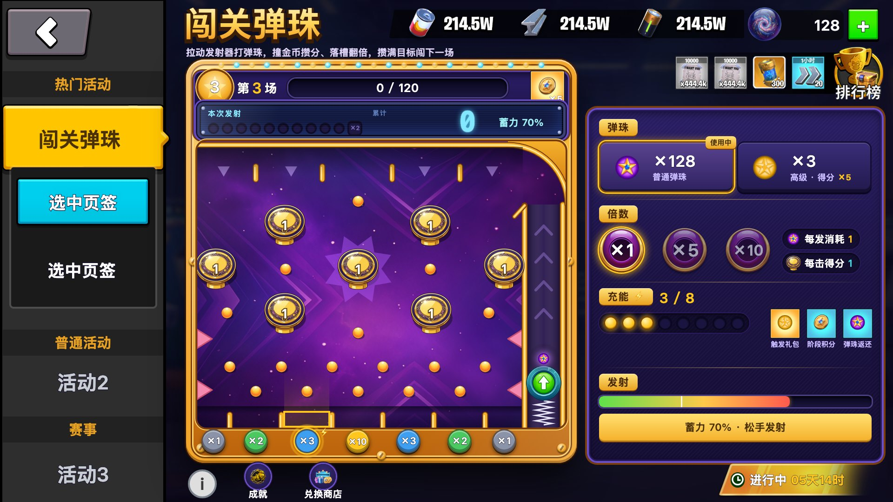
▶ 可操作 · 点开跳到此状态
按住发射钮向下拉，拉得越深力度越大；控制台力度条同步，白线 = 冲出槽口的最低力度。显示屏「蓄力 70%」。松手发射，空格键同效。
④ 松手 · 弹珠沿发射槽上冲
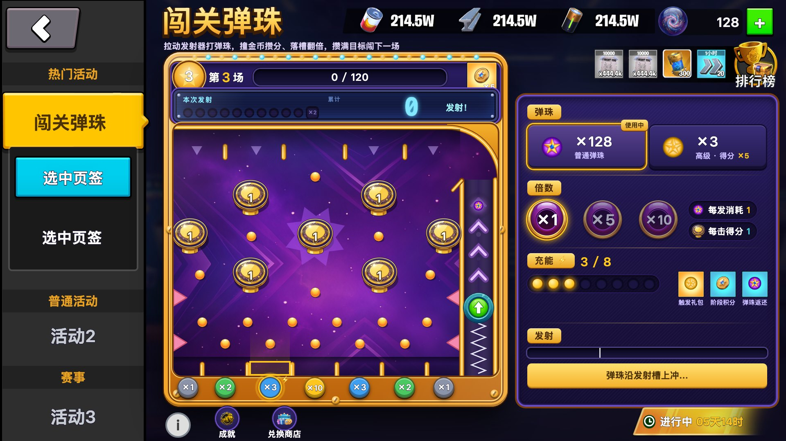
▶ 可操作 · 点开跳到此状态
弹珠全程可见：槽内上冲、箭头逐个点亮 → 槽顶敞口 → 右上圆顶轨 → 滑入盘面。冲出槽口那一刻才扣弹珠、开始计分；力度不足退回发射台，不消耗。
（3）计分核心循环
⑤ 盘内飞行 · 撞金币按次数加分（7 / 11）
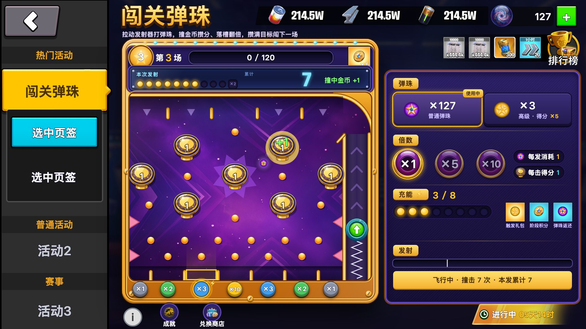
▶ 可操作 · 点开跳到此状态
撞中任意金币柱 = 撞击 +1、加一份基础分；7 根柱全同、次数全盘共用。显示屏：左 11 粒指示逐粒点亮、中累计分逐击跳动、右「撞中金币 +1」；盘上飘字 +1 与拖尾。
⑥ 第 11 次撞击 · 累计 ×2 封顶
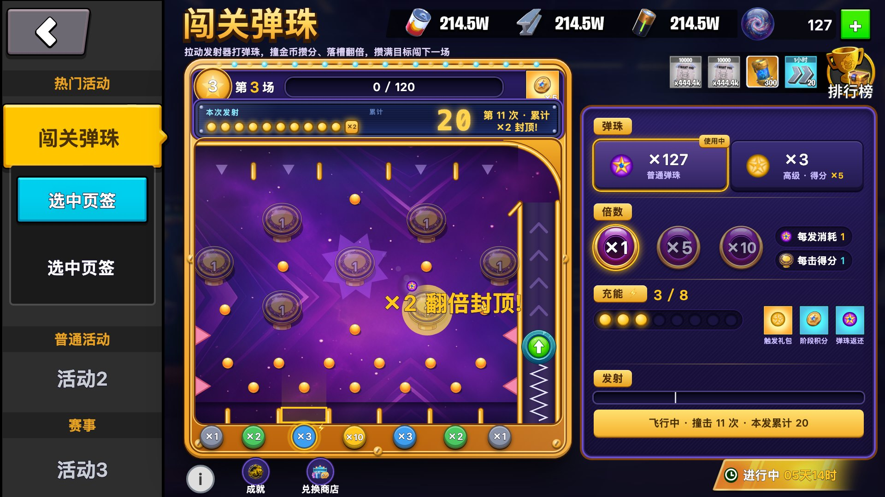
▶ 可操作 · 点开跳到此状态
第 11 次把本发累计分整体 ×2 并封顶，此后金币柱全部熄灭不再计分。显示屏 ×2 粒点亮、累计分变金；盘上金色大飘字——单发体验高潮点，要全屏级演出。
⑦ 落入触发槽（×3 ⚡）· 倍数结算 + 充能 +1
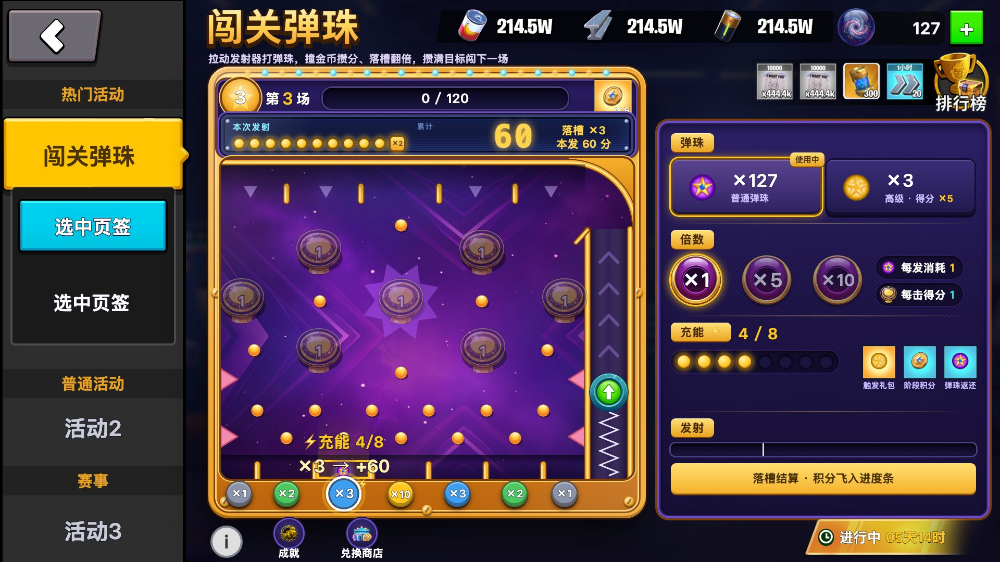
▶ 可操作 · 点开跳到此状态
落槽倍数对本发累计整体再乘：20 × 3 = 60 分；槽标签放大白框，显示屏变金，随后积分飞入上方进度条。落的是金框触发槽 → 充能 3/8 → 4/8（其余槽只结算倍数）。
⑧ 落入 ×10 槽 · 本场进度补满
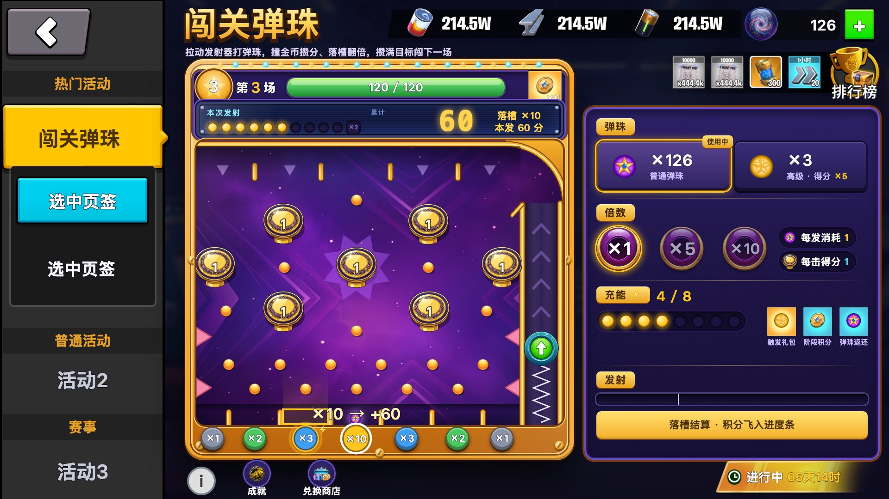
▶ 可操作 · 点开跳到此状态
6 次撞击 6 分 × 落槽 ×10 = 60 分，本场进度 60 → 120 满：进度条变绿，结算后奖励格金圈脉冲并自动弹「本场达成」。一发两次乘：第 11 次 ×2、落槽 ×N；高级弹珠在最外层再 ×5。
（4）闯关
⑨ 积分满 120 · 本场达成（L3）
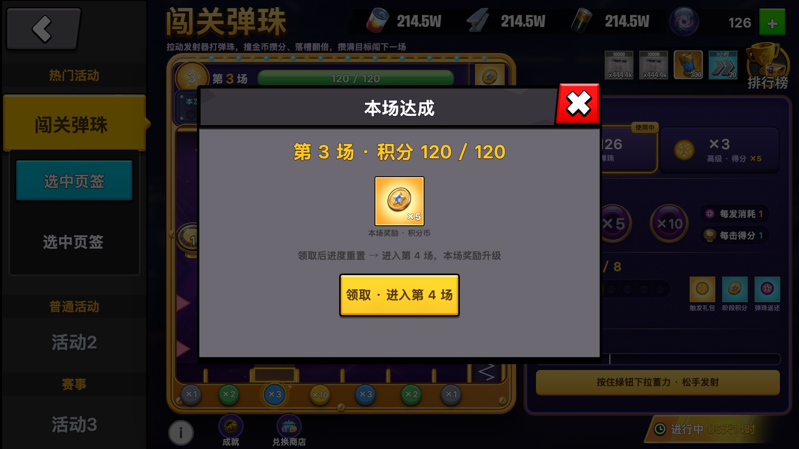
▶ 可操作 · 点开跳到此状态
弹窗：第 N 场 · 积分 120 / 120 + 本场奖励一件（就是进度条右侧奖励格那件）+ 主按钮「领取 · 进入第 4 场」。领完即进下一场，不给停顿点。奖励是什么以数值页为准，本稿只画结构。
⑩ 第 4 场开始（进度重置）
▶ 可操作 · 点开跳到此状态
进度条回 0 / 120、场数徽章跳 4、右侧本场奖励格换新一档（×5 → ×6）。触发槽充能不重置（与关卡进度独立），继续累计。
（5）充能 Buff 与付费转化
⑪ 充能满 8 · 弹出 Buff 抽取（L3）
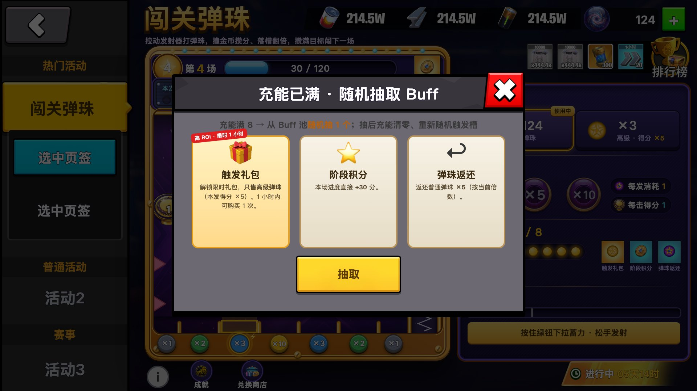
▶ 可操作 · 点开跳到此状态
充能满自动弹出：Buff 池三张牌全展示，底部一颗「抽取」钮——随机抽 1 个，不是玩家选。触发礼包是付费转化位，抽中权重压低、卡面视觉权重要拉开。抽后充能清零、触发槽重随。⑫⑬⑭ 是三种抽中结果。
⑫ 抽中「阶段积分」· 本场进度 +30
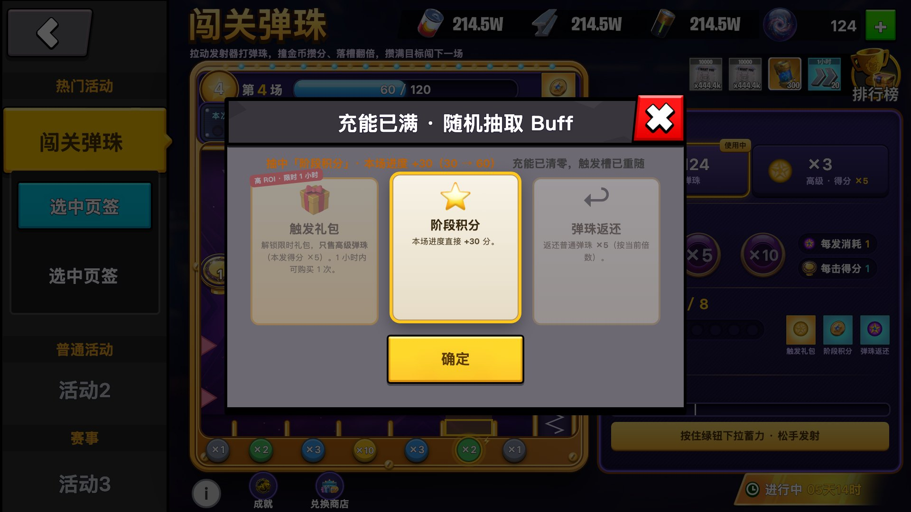
▶ 可操作 · 点开跳到此状态
点「抽取」后三张牌跑马灯高亮、减速、停在抽中那张；其余两张压暗。结果写在弹窗顶：本场进度 +30（30 → 60），背景进度条同步涨；触发槽 ⚡ 从 ×3 位重随到 ×2 位。「确定」关窗。
⑬ 抽中「弹珠返还」· 弹珠 ×5
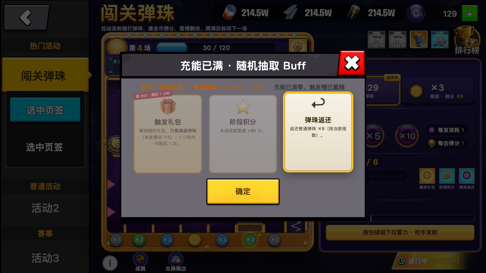
▶ 可操作 · 点开跳到此状态
返还普通弹珠 ×5，按当前倍数放大（×10 时返 50）；资产条与弹珠 chip 数量当场跳（124 → 129）。同样充能清零、触发槽重随。
⑭ 抽中「触发礼包」· 解锁限时礼包
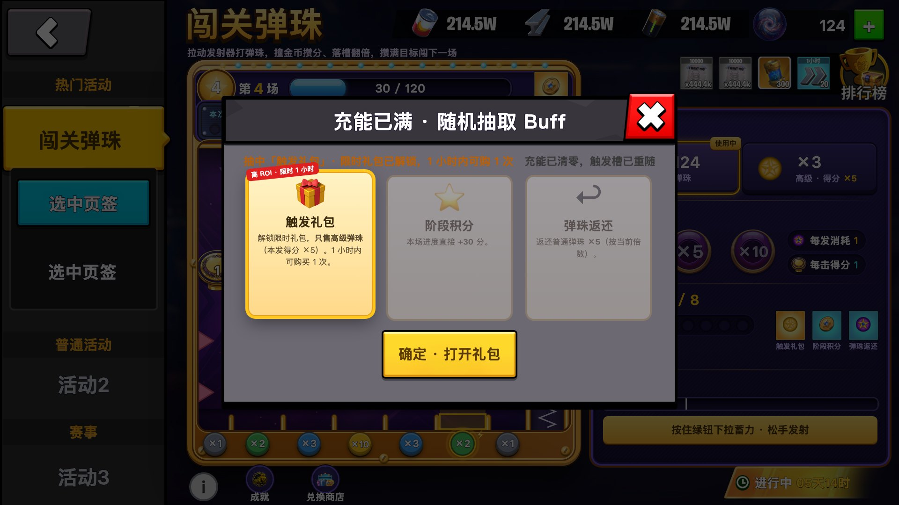
▶ 可操作 · 点开跳到此状态
热卡停牌，钮变「确定 · 打开礼包」→ 直接进限时礼包弹窗（⑮）。礼包 1 小时内有效，倒计时从这一刻起。
⑮ 限时触发礼包（只售高级弹珠）
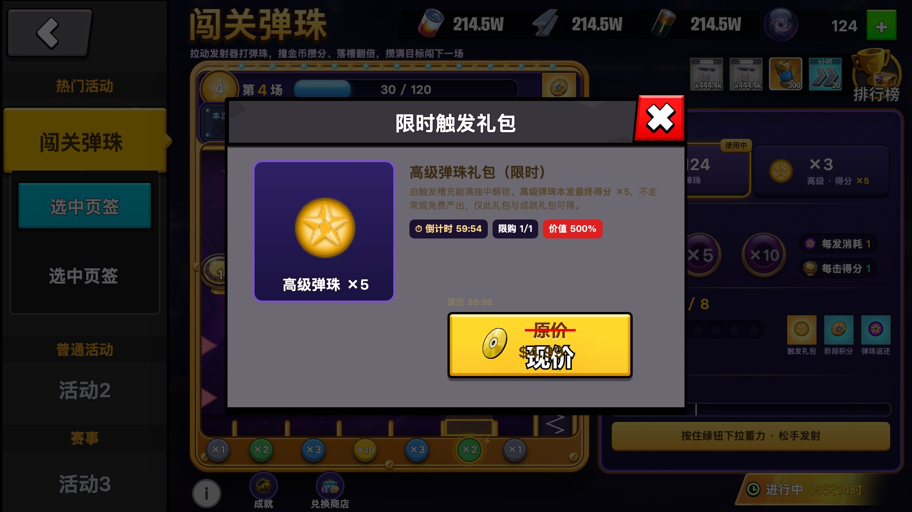
▶ 可操作 · 点开跳到此状态
倒计时、限购 1、价值标签、原价现价金钮四件同屏；购后钮置灰「已购买」。高级弹珠不走常规免费产出，只出自这里和成就礼包——全玩法核心付费链路。资产条【+】平时打开普通弹珠补给包。
（6）排行与边界态
⑯ 排行榜入口 → 排行榜（L3）
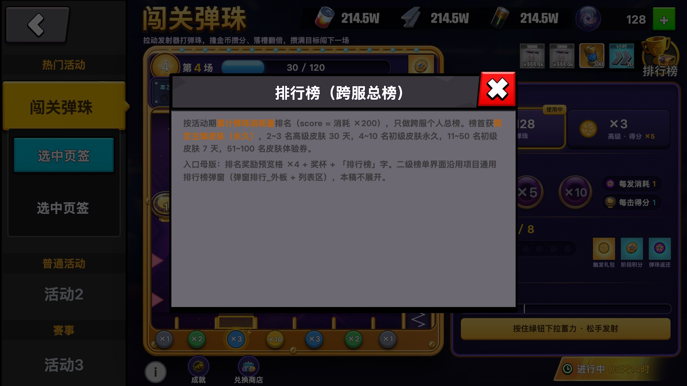
▶ 可操作 · 点开跳到此状态
按活动期累计弹珠消耗量排名，只做跨服个人总榜，榜首限定主城皮肤。二级榜单沿用项目通用排行榜弹窗，本稿不展开。
⑰ 边界态 · 弹珠不足
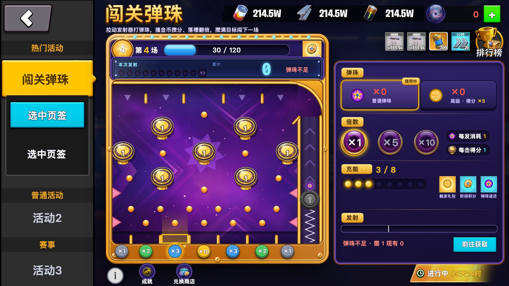
▶ 可操作 · 点开跳到此状态
发射钮置灰、显示屏红字「弹珠不足」、资产条数字变红；控制台红字写明「需 1 现有 0」+【前往获取】直达礼包。禁用态必须带原因与获取入口，不能只变灰。
⑱ 边界态 · 活动结束
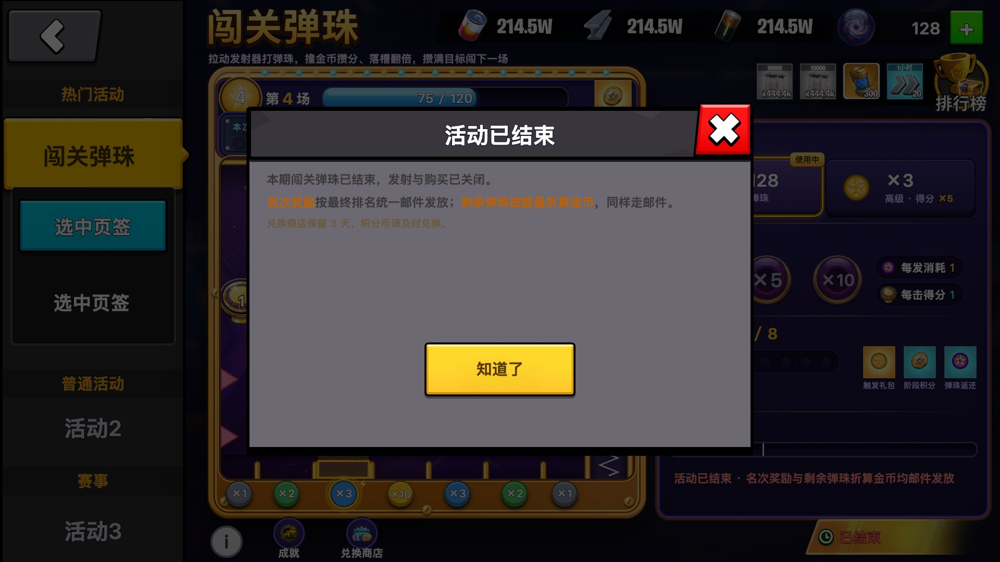
▶ 可操作 · 点开跳到此状态
发射钮置灰、倒计时改「已结束」、控制台写明原因；弹窗讲清名次奖励与剩余弹珠折算金币统一邮件发放——案子明确这条，必须讲清。
⑲ 边界态 · 数据加载失败
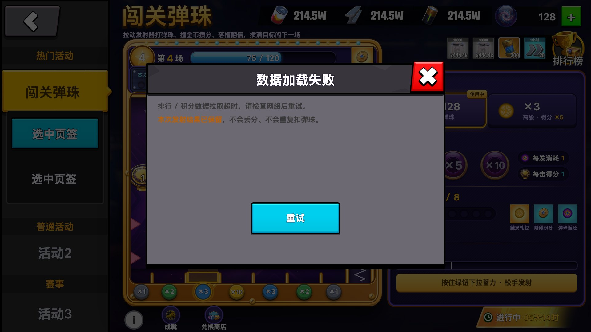
▶ 可操作 · 点开跳到此状态
排行 / 积分拉取超时。弹窗必须说明「本次发射结果已保留」+【重试】，否则玩家会以为白花了。断网、倒计时异常共用这套骨架。